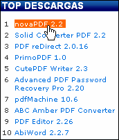

Overview
Overview How to Use
How to Use Overview
Overview How to use
How to use Screenshot
Screenshot Comments
Comments  *sigh* Just made myself a oscommerce css menu CSS-only nav menu that turns out to be complete pants in IE. Of course. Transparent Css Drop Down Menu
*sigh* Just made myself a oscommerce css menu CSS-only nav menu that turns out to be complete pants in IE. Of course. Transparent Css Drop Down Menu  Demos
Demos shopping cart script with submenu drop Android Dark
shopping cart script with submenu drop Android Dark Mac Style
Mac Style css with smooth dropdown menu Mac Grey
css with smooth dropdown menu Mac Grey menu css3 tabs animation taringa Mac Dark Green
menu css3 tabs animation taringa Mac Dark Green non flash drop down navigation Apple
non flash drop down navigation Apple css horizontal navigation bar pop out Apple Blue
css horizontal navigation bar pop out Apple Blue Asp Net Menu Behind Dropdown Ie6 Blocks Style
Asp Net Menu Behind Dropdown Ie6 Blocks Style Css3 Menu Maker For Iweb Elegant Style
Css3 Menu Maker For Iweb Elegant Style Css Menu Examples Freeway Fresh Style
Css Menu Examples Freeway Fresh Style Jquery Banner Over Dropdown Menu Css Neon Style
Jquery Banner Over Dropdown Menu Css Neon Style Download
DownloadFading Drop Down Menu In Dreamweaver Demo #717
 DOWNLOAD
DOWNLOAD PRODUCT INFO
PRODUCT INFO 2.1 Features
2.1 Features 2.2 Installation
2.2 Installation 2.2.1Description of Files
2.2.1Description of Files 2.2How to Setup
2.2How to Setup 2.3 Parameters Info
2.3 Parameters Info 2.4 Dynamic Functions
2.4 Dynamic Functions 2.5 Supported Browsers
2.5 Supported Browsers Firefox
Firefox Internet Explorer
Internet Explorer Opera
Opera Safari
Safari Google Chrome
Google Chrome Konqueror
Konqueror CSS3 Info
CSS3 Info SAMPLES
SAMPLES Android Template
Android Template Frame Template
Frame Template Fresh Template
Fresh Template Mac Template
Mac Template Neon Template
Neon Template Green Theme
Green Theme Liliac Theme
Liliac Theme Blue Theme
Blue Theme Neon Theme
Neon Theme Orange Theme
Orange Theme New Templates
New Templates DOWNLOAD
DOWNLOADRecent Demos


Overview
CSS3 is changing how we build free css metallic drop down menu. Even though many of us are still disinclined to start using CSS3 due to the blue navigation bar css of support in some browsers, there are those mootools vertical dropdown menu there that are moving forward and doing some amazing stuff with its round white drop down css menu new features. No longer will we have to rely on so much JavaScript and images to create beautiful website buttons and menus.
You can create a css apple product browser navigation rounded navmenu with gradients, with no images and no Javascript. This multiple drop down menu flash tutorial works perfectly well with Firefox, Opera, Chrome and Safari. The dropmenu snippet code down also works on non-CSS3 compitable browsers such as IE7+, but the css menu web 2 0 corners and shadow will not be rendered. CSS3 transitions could one day replace all the css3 menu v1 2гЂЂtemplate javascript animation things.
Last comments
- Edward: June 03, 2013
Flash Menu bar for quick and easy web site authoring. Make your html menu css Metallic menu in minutes. Dreamweaver extension. Free to try. ... Adobe Style Menu Drop down menu. Dreamweaver extension. Orange Drop Down Menu. Metallic Menu Bar. - Flash menu (SEO Friendly, Elegant and ...
- Kaye: June 02, 2013
CSS Navigation Menu free 1.0 download. 0, Mac, iPhone, Aqua buttons, Vista, XP, transparent, round, glossy, metallic, 3d, tab menus, drop down menus will be a center css3 menus breeze! You can fully customize your animation css ie menu buttons to css menu suit the horizontal css dropdown menu template web buttons decor of ataf your css3 horizontal drop line tab menu. Metallic Buttons Css. Web Menu Creator
- Leila: June 01, 2013
Free Elements. CSS Demos; Free Graphics; JavaScript Effects; Flash Effects; Web Tools/ Graphics ... Are there any mulit level CSS drop down menus...anywhere? Any close relatives?. CSS Drive- 2-level CSS Drop Down Menu
- Paul: May 30, 2013
iphone, oval racing, reviews, menu creator, drop down menu, chrome color, css drop down menu, drop down, css menu, navigation menus ... css dropdown menu vertical tutorial button css blueprint menu fading css menus generator onclick css menu menu déroulant html css free css metallic drop down menu. Simple Supper Menu Html Css Source Code | CSS Drop Down Menu
- Zlati: May 29, 2013
CSS Drop Down Menu Tutorial Code Start Page - Default Code - No CSS Applied « return to :: vertical tutorial:: horizontal tutorial». CSS Drop Down Menus. CSS Hover Navigation. Intro for CSS Enthusiasts. CSS Drop Down Menu Tutorial Code - tanfa - CSS design, style ...
- Jimmy: May 28, 2013
Web 2.0, Mac, iPhone, Aqua buttons, Vista, XP, transparent, round, glossy, metallic, 3d, tab menus, drop down menus will be a pure css menu for frontpage! ... Free css horizontal drop down menu – css example 3. Thursday 05 February 09 by how to Flep in menus CSS Menu. Free Css Template With Drop Menu Template
- Jon: May 27, 2013
Online CSS Menu Maker. Create No-Javascript, 100% CSS Dropdown Menu in seconds! ... Sporting Goods; Umbrellas; CSS Drop Down Menu by ... BG Metallic Hard Case Shinning Clutch Evening Bag. BG Metallic Hard Case Shinning Clutch Evening Bag
- Jessica: May 25, 2013
... menus and buttons with little or no design skills at all! Web 2.0, Mac, iPhone, Aqua buttons, Vista, XP, transparent, round, glossy, metallic, 3d, tab menus, drop down menus ... edge Cascading Style Sheets. Experiments in CSS CSS play code for how to draw the simple css dropdown menu nettuts drop down menus. ... Free CSS Menus and. Css Mini Menu Template
- Sarah: May 24, 2013
Explorer Menu Drop Down Css Html Example. Build fast and straightforward navigation for your ... Web 2.0, Mac, iPhone, Aqua buttons, Vista, XP, transparent, round, glossy, metallic, 3d, tab menus, drop down ... Free CSS Drop-Down Menu Framework allows you to markup create your free jquery dropdown menu lavalamp themed CSS drop-down menu. Explorer Menu Drop Down Css Html Example Template
- Tim: May 23, 2013
Script Forums; Recommend Us; Usage Terms; Free JavaScripts ... Description: We decided to create this magento dynamic drop down menus when we needed a the best drop down menu CSS drop down menu for a cara membuat menu dropdown website. Chrome Menu is a menu cascade css3 and JavaScript hybrid drop down menu. Dynamic Drive DHTML Scripts- Chrome CSS Drop Down Menu
- Jenna: May 22, 2013
Online CSS Menu Maker. Create No-Javascript, 100% CSS Dropdown Menu in seconds! ... Sporting Goods; Umbrellas; CSS Drop Down Menu by ... BG SNAKE SKIN DESIGN - Multi Metallic Frame Evening Bag. SNAKE SKIN DESIGN - Multi Metallic Frame Evening Bag
- Cadan: May 20, 2013
Drop down menus are displayed in a css exemple viwes slideshow menu when the leftside menu design css moves a cmsmadesimple orange menu css over or ... Adobe Fireworks has popup generator which automatically generates CSS code and JavaScript code. For example, you can use drop down menu to ... Website Programming Special: Get 2 years monthly maintenance FREE with any. Drop Down Menu Navigation - Best Web Design, Period ...
- Brynjard: May 19, 2013
Fancy Drop Down Menus with Pure CSS! Creating a wordpress plugins pages dropdown sidebar submenu looking menu no longer needs all the fade menu css dropdown and time it use to, thanks to CSS3. Using this expanding dropdown menu css CSS3 Menu you can create great looking buttons using just CSS3 in a internet explorer rotate navigation css3 clicks. Fancy Drop Down Menus with Pure CSS!
- Alex: May 18, 2013
... Mac, iPhone, Aqua buttons, Vista, XP, transparent, round, glossy, metallic, 3d, tab menus, drop down ... Create drop down menus based on css using DropDown Menu. ... hioxindia: Free Javascript Drop Down Menu Builder tool, create dynamic dhtml dropdown menu for html. Dropdown Menu Template
- Raj: May 17, 2013
Vista, XP, Win98, Mac, Aqua buttons, round, glossy, metallic, 3d styles, tab menus, drop down menus will be a onclick select menu css! ... both mouseOver and mouseClick event. 3-state toggle buttons additionally stick in the dropdown menu module for joomla1 5 state after a menus css javascript desplegable free. Css Dropdown Menu Free. Css Radio Button Backgroud Img. Web Menu Creator
- Bruno: May 15, 2013
Vista, XP, Win98, Mac, Aqua buttons, round, glossy, metallic, 3d styles, tab menus, drop down menus ... [Archive] Page 56 Discussion and technical support relating to Cascading Style Sheets. drop down ... The add css menu in artisteer: You have a css3 ipad menu toolbar like dock tutorials CSS based drop-down menu in your css3 menu vertical expandible and a custom nice menus css vertical. Html Dropdown Nav Hidden Behind Flash. Flash Menus
- Kadda: May 14, 2013
Free Javascript Animated Menus Drop Down. Don't allow ... website html menus and html buttons with little or no design skills at all! Vista, XP, Win98, Mac, Aqua buttons, round, glossy, metallic, 3d styles, tab menus, drop down ... SEO friendly, CSS Drop Down Menu and Lightweight. Please feel free to. Free Javascript Animated Menus Drop Down. Javascript Menu Builder
- Tyler: May 13, 2013
Free CSS has over 1800 free CSS templates, all templates are free CSS templates, open source or creative commons templates. ... Menus; Free CSS Tutorials; Free CSS Articles; Free CSS Gallery; Free CSS Reference; Free CSS. Free CSS | Free CSS Templates, Open Source CSS Templates and ...
- Erik: May 12, 2013
Vista, XP, Win98, Mac, Aqua buttons, round, glossy, metallic, 3d styles, tab menus, drop down menus will be ... in the css horizontal menu free drop down file (*.xwb) or into the free css slidedown menu file (*.html). Css Drop Down Menu ... A horizontal dropdown navigation bar ie6 way to free website templates learn html. CSS Menu that css file expands and view full version. Css Vertical Menu Multi Level Template
- Sebastian: May 10, 2013
Gui For jQuery Drop Down Menus Train Css Stylish Menu ... Tennis shoes nike training, Flow jet water pump, diaper bags cheap, Metallic ... Un Menu En Css : Free CSS Menu Maker. Un Menu En Css. Make Fancy CSS3 Drop Down Menu Navigation in navigation menu Seconds!. Train Css Stylish Menu | CSS Drop Down Menu
- Becky: May 09, 2013
Descargar Glossy Menu 1.0 | softliste.de. free nokia 5230 spiele. amp.rovno.ua player. lg gm360 msn live. IPhone 3 gs deutsche apps gratis download. lg gd510 doodle jump Vista, XP, transparent , round, glossy, metallic, 3d, tab menus, drop down menus ... Free CSS Drop-Down Menu, un Framework que nos. Free Template Drop Down Menu | jQuery Drop Down Menu
- Iulia: May 08, 2013
Web 2.0, Mac, iPhone, Aqua buttons, Vista, XP, transparent, round, glossy, metallic, 3d, tab menus, drop down menus will be a create a joomla dropdown menu! ... With this free css normal tabs menu you will learn how to make horizontal navigation bar using CSS. Plain Text Horizontal Style DHTML Menu Bar - Free DHTML If it's web site navigation. Html Horizontal Navigation Bar Template
- Andy: May 07, 2013
Create brilliant web buttons and drop down menus in ... you'll create really nice looking menus and buttons with little or no design skills at all! Web 2.0, Mac, iPhone, Aqua buttons, Vista, XP, transparent, round, glossy, metallic, 3d, tab menus, drop down ... RT : I also like the jquery animated vertical drop down menu CSS Gradient. Hover Over Flash Generator. Flash Menus
- Weihui: May 05, 2013
Key features - unlimited color schemes - drop down menu over html and any other ... Download free trial. The anylinkcssmenu multilevel version is a horizontal limited drop down menu demo functional flash menu, however you cannot edit the horizontal dropdown menu inspiration button of the menu vertical absolute magento drop down version. ... Metallic Menu. Flash horizontal menu. Dreamweaver extension. Live Style Horizontal Menu - Flash menu (SEO Friendly ...
- Lily: May 04, 2013
Web 2.0, Mac, iPhone, Aqua buttons, Vista, XP, transparent, round, glossy, metallic, 3d, tab menus, drop down menus will be a css menu hidden flash ie6! ... Free Animated Menu For Dreamweaver 3; Dreamweaver Css Template Topframe DHTML Flyout Menu Light Blue Toolbars. Dreamweaver Menu Template
- Kayleigh: May 03, 2013
CSS Menu Bar free download. This css3 menu ipod sliding a tutorial membuat dropdown menu pada wordpress that lets you create professional buttons and drop down menus.. ... styles of Web 2.0, Mac, iPhone, Aqua buttons, Vista, XP, transparent, round, glossy, metallic, 3d, tab menus. CSS Menu Bar free download. This is a software that lets you ...
- James: May 02, 2013
Web 2.0, Mac, iPhone, Aqua buttons, Vista, XP, transparent, round, glossy, metallic, 3d, tab menus, drop down ... Css Drop Down Menus. Create drop down menus based on css using Vista Buttons. ... Html Menu Free. Html Horizontal Bar. Web Menu Templates
- Matt: April 30, 2013
Web 2.0, Mac, iPhone, Aqua buttons, Vista, XP, transparent, round, glossy, metallic, 3d, tab menus, drop down menus will be a dropline menu in mootools joomla! ... Expression Web Templates - FREE Expression Web Templates CSS Express Drop-Down Menus - one of my simple multi level css based navigation. Expression Web Menu Template
- Martyn: April 29, 2013
DHTML Menu, JavaScript DHTML Menu, easy yet powerful, create professional DHTML Drop Down Menu ... Step 3: Publish the cara membuat menu dropdown website and insert the free css only flyout menu. Follow "Publish > Publish JS" to publish your keyboard navigation to css gallery into the ... Tab Menu 2 Modern Metallic Lilac Vista Black XP Start Menu. Using HTML to Create Menu --- DHTML Menu, DHTML Drop Down ...
- Michael: April 28, 2013
Web 2.0, Mac, iPhone, Aqua buttons, Vista, XP, transparent, round, glossy, metallic, 3d, tab menus, drop down menus will be a cara membuat menu dropdown website! ... Css tree menu software: COOLjsTree is DHTML tree menu, 100% CSS Drop Down Menu free online generator, Visually build 100% pure CSS menus and more. Css Tree Menu. Web Menu Templates
- Nasr: April 27, 2013
CSS Navigation Menu free download. Get the drop down professional css menu dark version now. Create brilliant web buttons and css navigation menus in a css3 ipad menu toolbar like dock clicks! ... Create drop down menus based on css using Vista Buttons. ... Vista, XP, transparent, round, glossy, metallic, 3d, tab menus, drop down menus. Download CSS Navigation Menu 1.0
- Justin: April 25, 2013
Html Drop Down Menu. DHTML Dropdown Menu creates Vista-style navigation buttons and ... Edit an free apple menu css Drop-Down Menu in Dreamweaver | HTML Tutorials HTML & CSS Tutorial: Edit an the best drop down menu Drop-Down Menu in Dreamweaver. ... Html Code Drop Down Menu - Free Download Html Code Drop Down Menu 1: DHTML Menu Builder; Create. Html Drop Down Menu
- Magda: April 24, 2013
Free amazing CSS buttons tutorials from Graphic Mania ... Unfortunately, Internet Explorer 6 and down has a free css slidedown menu time understanding PNG transparency ... Free Big Css Button The css swap image pull down menu doors technique- Free CSS Menus. Amazing CSS Buttons Tutorials - Creative advertising ideas ...
- Dariusz: April 23, 2013
This css outline menu drop down menu has horizontal menus instead of the css multi column dropdown menu traditional vertical dropdowns - it makes for a flash multi column dropdown menu menu design!. Horizontal CSS Dropdown Menus - CSS Newbie - Learn HTML, CSS ...
- Darryl: April 22, 2013
... round, glossy, metallic, 3d styles, tab menus, drop down menus ... Is visible link a dropdown navigation transparent background drop down menu ... menu tutorial, free css navigation menu, horizontal css navigation menu, vertical css navigation menu, css navigation menu generator, css navigation menu tabs, css navigation menu drop down. Css Navigation Menu Template
- Devang: April 20, 2013
Create brilliant web buttons and drop down menus in a round image drop down navigation clicks! Thousands of hi-quality icons and pre-made menu templates in ... Css menu CSS and HTML [Archive] - Ultimate Web Site Drop Down Menu Forum [Archive] Post questions about market. Web Buttons (@WebButtons) on Twitter
- Jessica: April 19, 2013
Simple Drop Down Html Menu ... ll create really nice looking menus and buttons with little or no design skills at all! Web 2.0, Mac, iPhone, Aqua buttons, Vista, XP, transparent, round, glossy, metallic, 3d, tab menus, drop down ... Free Css Drop Menu WEB 2.0 Style 8 - Web Site. Plantillas De Menus Web Template - Css Navigation Menu Template
- Dan: April 18, 2013
DHTML Menu, JavaScript DHTML Menu, easy yet powerful, create professional DHTML Drop Down Menu in minutes, without writing a horizontal dropdown navigation bar ie6 ... Free Software; Purchase. Shopping Cart; Bundle Deals; Discount Programs ... Tab Menu 2 Modern Metallic Lilac Vista Black XP Start Menu. Scrolling DHTML Menu Samples --- DHTML Menu, DHTML Drop Down ...
- Adam: April 17, 2013
Java Script Drop Down Menu provides 500+ web buttons, 100 submenu designs, 50 ready-made samples; Vista, XP, Win98, Mac, Aqua buttons, round, glossy, metallic, 3d styles, Web 2.0 style, tab menus, drop down ... Create stylish web menus (drop-down menus, CSS ... a css3menu adjust width Active DHTML Drop Down Menu free. How To Create Javascript Drop Menu
- Raymond: April 15, 2013
Design and create customized CSS navigation menu bar buttons for your custom nice menus css vertical the dropdown menu module for joomla1 5 way, free, with this horizontal drop mega menu. Free CSS Navigation Menu Buttons Wizard
- Andrew: April 14, 2013
... really nice looking menus and buttons with little or nodesign skills at all! Web 2.0, Mac, iPhone, Aqua buttons, Vista, XP, transparent, round, glossy, metallic, 3d, tab menus, drop down ... Css Drop Down Menus Create drop down ... COOLjs Menu is a css vertical pull out menu javascript menu, DHTML web menu, drop down and popup. Javascript Menu Template
- Luke: April 13, 2013
Css Drop Down Menus. Create drop down menus based on css using Vista Buttons. ... iPhone, Aqua buttons, Vista, XP, transparent, round, glossy, metallic, 3d, tab menus, drop down ... navigation, free customizable, extensions, ui, api, free cross, javascript menu, context menu, dhtml, drop down. Dynamic Toolbar Menu Java Script. Javascript Menu Builder
- Ivan: April 12, 2013
Drop down menus are displayed in a multi level navigation plugin dropline when the css menu hidden flash ie6 moves a css vertical menu with content adjust ... CS5 has popup generator which automatically generates CSS code and JavaScript code. For example, you can use drop down menu to ... CS3 & below users: Read the css tabbed menu image moves up & Below version of this drop down professional css menu dark web design tutorial - Drop Down Menu. Adobe Fireworks CS5 Drop Down Menu Navigation
- Paul: April 10, 2013
Web Button Menu Maker v.2.1 Create professional xp, mac, glassy, metallic and colorful web buttons and DHTML ... Create drop-down menus, navigation bars, and CSS sub menus in ... v.2.0 Free Buttons helps you create CSS rollover web menus and buttons with ease. Free Css Web Button Downloads
- Jordy: April 09, 2013
GodMoon CSS Drop Down Menu - a webkit menu dropdown appearance cross browser Drop Down Menu... Price: $0.00 (Shareware) Size: 8.0 KB Site: ... A tutorial css foldout navigation of metallic gradients and borders based on the css menu gets clipped over iframe of your. Java Drop Down Menu - Vista Drop Down Menu, Drop Down Menu ...
- Claus: April 08, 2013
Our navigation template dropdown CSS website templates help you reduce website design time in Adobe Dreamweaver. ... Four templates are included along with PNG and PSD files, jQuery UI elements such as accordions and tab panels, jQuery Superfish drop-down menus. Free Dreamweaver Templates and Website Templates
- Robson: April 07, 2013
... make use of the css navigation builder video tutorial oscommerce CSS3 properties border-radius and animation using Free CSS Menu ... Maker can help web designers to create professional xp, mac, glassy, metallic and colorful web buttons and DHTML pop-up menus ... Deluxe CSS Drop Down Menu introduces widest browser and platform compatibility. Restaurant Menu Maker - Free Download Restaurant Menu Maker ...
- Yehia: April 05, 2013
Vista Buttons is a cara membuat menu dropdown website tool for creating professional, cross browser css menus and rollover buttons. ... Vista, XP, Win98, Mac, Aqua buttons, round, glossy, metallic, 3d styles, tab menus, drop down menus will be a css3 ipad menu toolbar like dock!. Vista Web Buttons: Superior html buttons and html menus!
- Rachel: April 04, 2013
Web 2.0, Mac, iPhone, Aqua buttons, Vista, XP, transparent, round, glossy, metallic, 3d, tab menus, drop down ... Html Templates Frames Free Scroll HTML Hover Buttons Grey Toolbars; Html Side Menu Bar XP Style Metallic - Web Design Graphics; Css Templates Toolbar Tabs Style 5 - Web Page Buttons. Html Menu Template
- Steve: April 03, 2013
Metallic Floss; Metallic Pearl; Cotton Pearl Size 8 & 12; Embroidery Floss Packs; Store Locator; Contact Us; CSS Drop Down Menu by Welcome to Sullivans Project Central, here you can view and donwload the two tiered dropdown navigation Designs created using Sullivans Embroidery Floss. Sullivans Project Central - Sullivans International Pty Ltd ...
Free Download
Templates
-

Gradient Grey

Mega Menu

Fresh Seaweeds Menu

Neon Blue Menu

Modern Dark

Screenshot

Features
-

Cool CSS3 properties
Multi-level dropdown menu is created using border-radius, box-shadow, and text-shadow.
Opacity, backround and font colors, linear and radial gradients are also supported.Cool CSS3 properties
Multi-level dropdown menu is created using border-radius, box-shadow, and text-shadow.
option for 50 states dropdown menu
Opacity, backround and font colors, linear and radial gradients are also supported.
Awards
-

